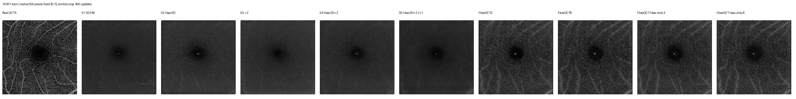
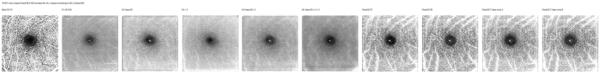
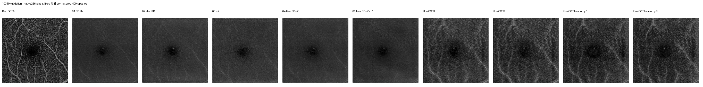
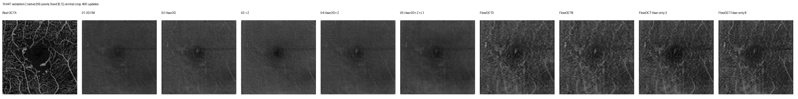
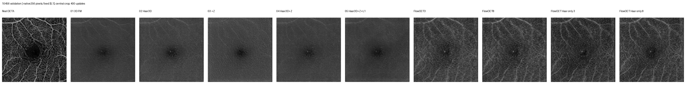
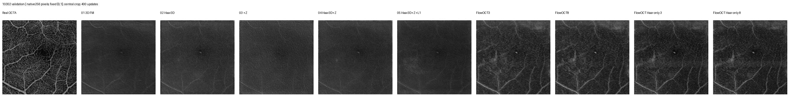

本轮观察：256³可以训练，但400次更新仍未恢复细血管。FlowOCT相对较好；扩大视野没有带来同一训练区域的PCC提升。阅读本轮结论。
中央256³直接裁剪；每格投影原生256×256像素。训练病例10301，验证4位患者；已完成9/11个方法/求解器结果行，每个完成结果均为400次成功更新。单病例拟合检查，不代表完整训练效果。
完整口径 · 指标CSV · 相同物理64区域对照 · 设计与资源
| 方法 | 训练PCC | 训练SSIM | 验证PCC | 验证SSIM |
|---|---|---|---|---|
| 01 3D FM | 0.3732 | 0.1494 | 0.3455 | 0.1593 |
| 02 Haar3D | 0.3937 | 0.1623 | 0.3821 | 0.1827 |
| 03 +Z | 0.3482 | 0.1498 | 0.3111 | 0.1599 |
| 04 Haar3D+Z | 0.3885 | 0.1540 | 0.3423 | 0.1639 |
| 05 Haar3D+Z+L1 | 0.3924 | 0.1453 | 0.3212 | 0.1481 |
| FlowOCT3 | 0.4679 | 0.2393 | 0.4361 | 0.2497 |
| FlowOCT8 | 0.4694 | 0.2528 | 0.4347 | 0.2574 |
| FlowOCT Haar only 3 | 0.4891 | 0.2465 | 0.4489 | 0.2722 |
| FlowOCT Haar only 8 | 0.4869 | 0.2556 | 0.4430 | 0.2703 |
均为ILM–OPL投影，验证按患者等权平均。256视野与旧64视野的分数不能直接解释为尺寸收益；请结合相同物理ROI比较。






主图使用统一[0,1]显示窗；shared_lowwindow图使用统一[0,0.25]窗，所有方法与真值一致，用于查看低幅度结构。评分不变。
目标区域逐元素一致，新旧均400次更新；输入视野、体素曝光和计算量不同。
| 方法 | 旧64 PCC | 新256 PCC | 旧64 SSIM | 新256 SSIM |
|---|---|---|---|---|
| 01 3D FM | 0.2512 | 0.1674 | 0.1568 | 0.1379 |
| 02 Haar3D | 0.2909 | 0.2374 | 0.1785 | 0.1555 |
| 03 +Z | 0.2683 | 0.2345 | 0.1493 | 0.1600 |
| 04 Haar3D+Z | 0.2649 | 0.2246 | 0.1675 | 0.1503 |
| 05 Haar3D+Z+L1 | 0.2886 | 0.2542 | 0.1648 | 0.1484 |
| FlowOCT3 | 0.4782 | 0.3203 | 0.3666 | 0.2611 |
| FlowOCT8 | 0.4747 | 0.3202 | 0.3778 | 0.2734 |